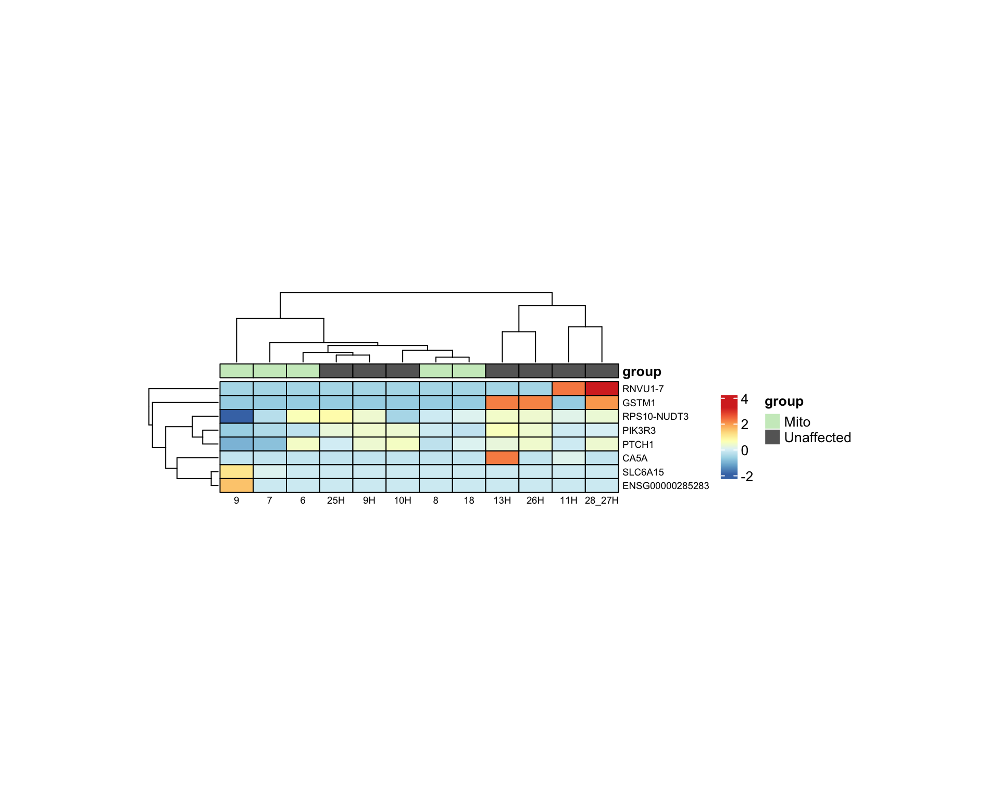
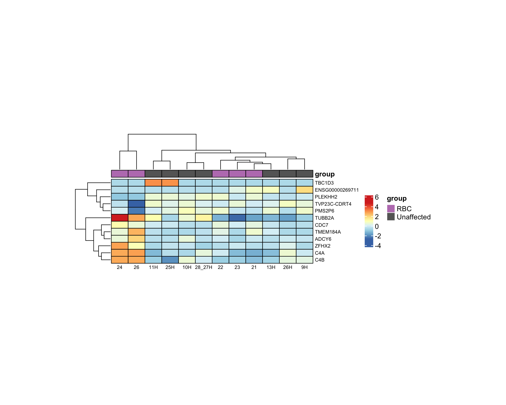
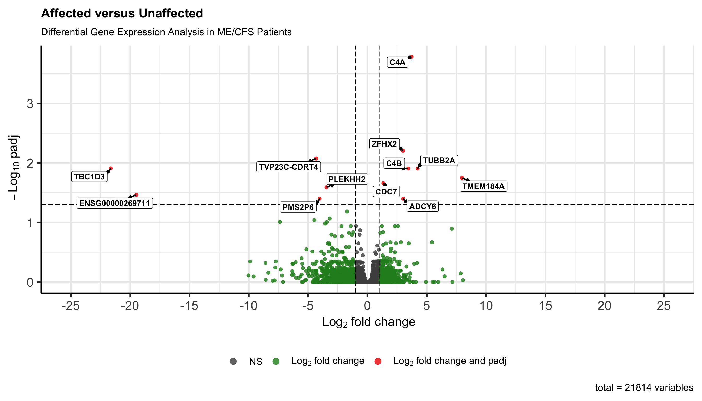

Last updated: 2026-04-14
Checks: 7 0
Knit directory: dge-analysis/
This reproducible R Markdown analysis was created with workflowr (version 1.7.1). The Checks tab describes the reproducibility checks that were applied when the results were created. The Past versions tab lists the development history.
Great! Since the R Markdown file has been committed to the Git repository, you know the exact version of the code that produced these results.
Great job! The global environment was empty. Objects defined in the global environment can affect the analysis in your R Markdown file in unknown ways. For reproduciblity it’s best to always run the code in an empty environment.
The command set.seed(20230618) was run prior to running
the code in the R Markdown file. Setting a seed ensures that any results
that rely on randomness, e.g. subsampling or permutations, are
reproducible.
Great job! Recording the operating system, R version, and package versions is critical for reproducibility.
Nice! There were no cached chunks for this analysis, so you can be confident that you successfully produced the results during this run.
Great job! Using relative paths to the files within your workflowr project makes it easier to run your code on other machines.
Great! You are using Git for version control. Tracking code development and connecting the code version to the results is critical for reproducibility.
The results in this page were generated with repository version 27aedd7. See the Past versions tab to see a history of the changes made to the R Markdown and HTML files.
Note that you need to be careful to ensure that all relevant files for
the analysis have been committed to Git prior to generating the results
(you can use wflow_publish or
wflow_git_commit). workflowr only checks the R Markdown
file, but you know if there are other scripts or data files that it
depends on. Below is the status of the Git repository when the results
were generated:
Ignored files:
Ignored: .DS_Store
Ignored: .github/.DS_Store
Ignored: dge-analysis/.DS_Store
Ignored: dge-analysis/.Rhistory
Ignored: dge-analysis/.Rproj.user/
Ignored: dge-analysis/.cursor/
Ignored: dge-analysis/AGENTS.md
Ignored: dge-analysis/analysis/.DS_Store
Ignored: dge-analysis/data/.DS_Store
Ignored: dge-analysis/output/.DS_Store
Ignored: dge-analysis/output/all-samples-analysis/
Ignored: dge-analysis/output/deconvolution/
Ignored: dge-analysis/output/publication-analysis/publication-analysis.RData
Ignored: dge-analysis/output/subgroup-chrn-analysis/CHRN-subgroup-analysis.RData
Ignored: dge-analysis/output/subgroup-hpp-analysis/HPP-subgroup-analysis.RData
Ignored: dge-analysis/output/subgroup-ion_channel-analysis/Ion_Channel-subgroup-analysis.RData
Ignored: dge-analysis/output/subgroup-mito-analysis/Mito-subgroup-analysis.RData
Ignored: dge-analysis/output/subgroup-potassium-analysis/
Ignored: dge-analysis/output/subgroup-rbc-analysis/RBC-subgroup-analysis.RData
Ignored: dge-analysis/renv/.DS_Store
Ignored: dge-analysis/renv/library/
Ignored: dge-analysis/renv/staging/
Ignored: phenotypic-analysis/.DS_Store
Ignored: variant-findings-plot/.DS_Store
Untracked files:
Untracked: dge-analysis/data/CIBERSORTx_Job1_output/
Untracked: dge-analysis/data/CIBERSORTx_Job2_output/
Untracked: dge-analysis/data/id_map.csv
Untracked: dge-analysis/output/publication-analysis/degs_padj_0.1.png
Untracked: dge-analysis/output/publication-analysis/supplemental_figure_4_significant_degs_padj_.05.png
Untracked: output/
Unstaged changes:
Modified: dge-analysis/analysis/_site.yml
Modified: dge-analysis/analysis/custom.css
Modified: dge-analysis/analysis/head.html
Modified: dge-analysis/code/helpers.R
Modified: dge-analysis/output/publication-analysis/Supplemental Table 5. Significant Differentially Expressed Genes.csv
Modified: dge-analysis/output/publication-analysis/batch-correction-limma/plot-counts/genes-of-interest/ACACB-subsetted-plot-counts.png
Modified: dge-analysis/output/publication-analysis/batch-correction-limma/plot-counts/genes-of-interest/ACADM-subsetted-plot-counts.png
Modified: dge-analysis/output/publication-analysis/batch-correction-limma/plot-counts/genes-of-interest/ACADVL-subsetted-plot-counts.png
Modified: dge-analysis/output/publication-analysis/batch-correction-limma/plot-counts/genes-of-interest/ADM2-subsetted-plot-counts.png
Modified: dge-analysis/output/publication-analysis/batch-correction-limma/plot-counts/genes-of-interest/ADORA2A-subsetted-plot-counts.png
Modified: dge-analysis/output/publication-analysis/batch-correction-limma/plot-counts/genes-of-interest/ADORA2B-subsetted-plot-counts.png
Modified: dge-analysis/output/publication-analysis/batch-correction-limma/plot-counts/genes-of-interest/ADRB2-subsetted-plot-counts.png
Modified: dge-analysis/output/publication-analysis/batch-correction-limma/plot-counts/genes-of-interest/ATP1A1-subsetted-plot-counts.png
Modified: dge-analysis/output/publication-analysis/batch-correction-limma/plot-counts/genes-of-interest/CALCB-subsetted-plot-counts.png
Modified: dge-analysis/output/publication-analysis/batch-correction-limma/plot-counts/genes-of-interest/CCR5-subsetted-plot-counts.png
Modified: dge-analysis/output/publication-analysis/batch-correction-limma/plot-counts/genes-of-interest/CHRFAM7A-subsetted-plot-counts.png
Modified: dge-analysis/output/publication-analysis/batch-correction-limma/plot-counts/genes-of-interest/COL6A3-subsetted-plot-counts.png
Modified: dge-analysis/output/publication-analysis/batch-correction-limma/plot-counts/genes-of-interest/COMT-subsetted-plot-counts.png
Modified: dge-analysis/output/publication-analysis/batch-correction-limma/plot-counts/genes-of-interest/CPT1A-subsetted-plot-counts.png
Modified: dge-analysis/output/publication-analysis/batch-correction-limma/plot-counts/genes-of-interest/CPT1B-subsetted-plot-counts.png
Modified: dge-analysis/output/publication-analysis/batch-correction-limma/plot-counts/genes-of-interest/CPT1C-subsetted-plot-counts.png
Modified: dge-analysis/output/publication-analysis/batch-correction-limma/plot-counts/genes-of-interest/CUBN-subsetted-plot-counts.png
Modified: dge-analysis/output/publication-analysis/batch-correction-limma/plot-counts/genes-of-interest/CYTH2-subsetted-plot-counts.png
Modified: dge-analysis/output/publication-analysis/batch-correction-limma/plot-counts/genes-of-interest/DENND1A-subsetted-plot-counts.png
Modified: dge-analysis/output/publication-analysis/batch-correction-limma/plot-counts/genes-of-interest/DMXL2-subsetted-plot-counts.png
Modified: dge-analysis/output/publication-analysis/batch-correction-limma/plot-counts/genes-of-interest/ELOVL4-subsetted-plot-counts.png
Modified: dge-analysis/output/publication-analysis/batch-correction-limma/plot-counts/genes-of-interest/ENO3-subsetted-plot-counts.png
Modified: dge-analysis/output/publication-analysis/batch-correction-limma/plot-counts/genes-of-interest/ETFB-subsetted-plot-counts.png
Modified: dge-analysis/output/publication-analysis/batch-correction-limma/plot-counts/genes-of-interest/FCRL1-subsetted-plot-counts.png
Modified: dge-analysis/output/publication-analysis/batch-correction-limma/plot-counts/genes-of-interest/FKBP5-subsetted-plot-counts.png
Modified: dge-analysis/output/publication-analysis/batch-correction-limma/plot-counts/genes-of-interest/G6PD-subsetted-plot-counts.png
Modified: dge-analysis/output/publication-analysis/batch-correction-limma/plot-counts/genes-of-interest/GABRB3-subsetted-plot-counts.png
Modified: dge-analysis/output/publication-analysis/batch-correction-limma/plot-counts/genes-of-interest/GIPR-subsetted-plot-counts.png
Modified: dge-analysis/output/publication-analysis/batch-correction-limma/plot-counts/genes-of-interest/GLYCTK-subsetted-plot-counts.png
Modified: dge-analysis/output/publication-analysis/batch-correction-limma/plot-counts/genes-of-interest/GMPPB-subsetted-plot-counts.png
Modified: dge-analysis/output/publication-analysis/batch-correction-limma/plot-counts/genes-of-interest/GPNMB-subsetted-plot-counts.png
Modified: dge-analysis/output/publication-analysis/batch-correction-limma/plot-counts/genes-of-interest/HADHA-subsetted-plot-counts.png
Modified: dge-analysis/output/publication-analysis/batch-correction-limma/plot-counts/genes-of-interest/HSPA1A-subsetted-plot-counts.png
Modified: dge-analysis/output/publication-analysis/batch-correction-limma/plot-counts/genes-of-interest/HTR6-subsetted-plot-counts.png
Modified: dge-analysis/output/publication-analysis/batch-correction-limma/plot-counts/genes-of-interest/IDO1-subsetted-plot-counts.png
Modified: dge-analysis/output/publication-analysis/batch-correction-limma/plot-counts/genes-of-interest/IFNG-subsetted-plot-counts.png
Modified: dge-analysis/output/publication-analysis/batch-correction-limma/plot-counts/genes-of-interest/IL10-subsetted-plot-counts.png
Modified: dge-analysis/output/publication-analysis/batch-correction-limma/plot-counts/genes-of-interest/IL6-subsetted-plot-counts.png
Modified: dge-analysis/output/publication-analysis/batch-correction-limma/plot-counts/genes-of-interest/KLHL7-subsetted-plot-counts.png
Modified: dge-analysis/output/publication-analysis/batch-correction-limma/plot-counts/genes-of-interest/LMBRD1-subsetted-plot-counts.png
Modified: dge-analysis/output/publication-analysis/batch-correction-limma/plot-counts/genes-of-interest/MADD-subsetted-plot-counts.png
Modified: dge-analysis/output/publication-analysis/batch-correction-limma/plot-counts/genes-of-interest/MAPK1-subsetted-plot-counts.png
Modified: dge-analysis/output/publication-analysis/batch-correction-limma/plot-counts/genes-of-interest/MCCC1-subsetted-plot-counts.png
Modified: dge-analysis/output/publication-analysis/batch-correction-limma/plot-counts/genes-of-interest/MCCC2-subsetted-plot-counts.png
Modified: dge-analysis/output/publication-analysis/batch-correction-limma/plot-counts/genes-of-interest/MINPP1-subsetted-plot-counts.png
Modified: dge-analysis/output/publication-analysis/batch-correction-limma/plot-counts/genes-of-interest/MLYCD-subsetted-plot-counts.png
Modified: dge-analysis/output/publication-analysis/batch-correction-limma/plot-counts/genes-of-interest/MMAA-subsetted-plot-counts.png
Modified: dge-analysis/output/publication-analysis/batch-correction-limma/plot-counts/genes-of-interest/MMACHC-subsetted-plot-counts.png
Modified: dge-analysis/output/publication-analysis/batch-correction-limma/plot-counts/genes-of-interest/MYH9-subsetted-plot-counts.png
Modified: dge-analysis/output/publication-analysis/batch-correction-limma/plot-counts/genes-of-interest/NLRP3-subsetted-plot-counts.png
Modified: dge-analysis/output/publication-analysis/batch-correction-limma/plot-counts/genes-of-interest/NR3C1-subsetted-plot-counts.png
Modified: dge-analysis/output/publication-analysis/batch-correction-limma/plot-counts/genes-of-interest/NUP42-subsetted-plot-counts.png
Modified: dge-analysis/output/publication-analysis/batch-correction-limma/plot-counts/genes-of-interest/OXTR-subsetted-plot-counts.png
Modified: dge-analysis/output/publication-analysis/batch-correction-limma/plot-counts/genes-of-interest/P2RX7-subsetted-plot-counts.png
Modified: dge-analysis/output/publication-analysis/batch-correction-limma/plot-counts/genes-of-interest/PCK2-subsetted-plot-counts.png
Modified: dge-analysis/output/publication-analysis/batch-correction-limma/plot-counts/genes-of-interest/PGM1-subsetted-plot-counts.png
Modified: dge-analysis/output/publication-analysis/batch-correction-limma/plot-counts/genes-of-interest/POLG-subsetted-plot-counts.png
Modified: dge-analysis/output/publication-analysis/batch-correction-limma/plot-counts/genes-of-interest/PTPN22-subsetted-plot-counts.png
Modified: dge-analysis/output/publication-analysis/batch-correction-limma/plot-counts/genes-of-interest/SLC12A3-subsetted-plot-counts.png
Modified: dge-analysis/output/publication-analysis/batch-correction-limma/plot-counts/genes-of-interest/SLC25A20-subsetted-plot-counts.png
Modified: dge-analysis/output/publication-analysis/batch-correction-limma/plot-counts/genes-of-interest/SLC7A9-subsetted-plot-counts.png
Modified: dge-analysis/output/publication-analysis/batch-correction-limma/plot-counts/genes-of-interest/SMCR8-subsetted-plot-counts.png
Modified: dge-analysis/output/publication-analysis/batch-correction-limma/plot-counts/genes-of-interest/SURF1-subsetted-plot-counts.png
Modified: dge-analysis/output/publication-analysis/batch-correction-limma/plot-counts/genes-of-interest/SYT6-subsetted-plot-counts.png
Modified: dge-analysis/output/publication-analysis/batch-correction-limma/plot-counts/genes-of-interest/TACO1-subsetted-plot-counts.png
Modified: dge-analysis/output/publication-analysis/batch-correction-limma/plot-counts/genes-of-interest/TNF-subsetted-plot-counts.png
Modified: dge-analysis/output/publication-analysis/batch-correction-limma/plot-counts/genes-of-interest/TOMM7-subsetted-plot-counts.png
Modified: dge-analysis/output/publication-analysis/batch-correction-limma/plot-counts/genes-of-interest/UCP2-subsetted-plot-counts.png
Modified: dge-analysis/output/publication-analysis/batch-correction-limma/plot-counts/genes-of-interest/VIPR2-subsetted-plot-counts.png
Modified: dge-analysis/output/publication-analysis/batch-correction-limma/plot-counts/genes-of-interest/faceted_genes_of_interest_plot_counts.png
Modified: dge-analysis/output/publication-analysis/batch-correction-limma/plot-counts/padj-05/CBX3P2-subsetted-plot-counts.png
Modified: dge-analysis/output/publication-analysis/batch-correction-limma/plot-counts/padj-05/CD248-subsetted-plot-counts.png
Modified: dge-analysis/output/publication-analysis/batch-correction-limma/plot-counts/padj-05/DEFA1-subsetted-plot-counts.png
Modified: dge-analysis/output/publication-analysis/batch-correction-limma/plot-counts/padj-05/ENSG00000142539-subsetted-plot-counts.png
Modified: dge-analysis/output/publication-analysis/batch-correction-limma/plot-counts/padj-05/ENSG00000224610-subsetted-plot-counts.png
Modified: dge-analysis/output/publication-analysis/batch-correction-limma/plot-counts/padj-05/ENSG00000225544-subsetted-plot-counts.png
Modified: dge-analysis/output/publication-analysis/batch-correction-limma/plot-counts/padj-05/ENSG00000254732-subsetted-plot-counts.png
Modified: dge-analysis/output/publication-analysis/batch-correction-limma/plot-counts/padj-05/ENSG00000267793-subsetted-plot-counts.png
Modified: dge-analysis/output/publication-analysis/batch-correction-limma/plot-counts/padj-05/ENSG00000273162-subsetted-plot-counts.png
Modified: dge-analysis/output/publication-analysis/batch-correction-limma/plot-counts/padj-05/ENSG00000285505-subsetted-plot-counts.png
Modified: dge-analysis/output/publication-analysis/batch-correction-limma/plot-counts/padj-05/ENSG00000289694-subsetted-plot-counts.png
Modified: dge-analysis/output/publication-analysis/batch-correction-limma/plot-counts/padj-05/F8A2-subsetted-plot-counts.png
Modified: dge-analysis/output/publication-analysis/batch-correction-limma/plot-counts/padj-05/FSCN2-subsetted-plot-counts.png
Modified: dge-analysis/output/publication-analysis/batch-correction-limma/plot-counts/padj-05/KCNQ5-subsetted-plot-counts.png
Modified: dge-analysis/output/publication-analysis/batch-correction-limma/plot-counts/padj-05/KLHL4-subsetted-plot-counts.png
Modified: dge-analysis/output/publication-analysis/batch-correction-limma/plot-counts/padj-05/LRRN3-subsetted-plot-counts.png
Modified: dge-analysis/output/publication-analysis/batch-correction-limma/plot-counts/padj-05/MED14OS-subsetted-plot-counts.png
Modified: dge-analysis/output/publication-analysis/batch-correction-limma/plot-counts/padj-05/MPPED2-subsetted-plot-counts.png
Modified: dge-analysis/output/publication-analysis/batch-correction-limma/plot-counts/padj-05/ODF3-subsetted-plot-counts.png
Modified: dge-analysis/output/publication-analysis/batch-correction-limma/plot-counts/padj-05/PIK3R3-subsetted-plot-counts.png
Modified: dge-analysis/output/publication-analysis/batch-correction-limma/plot-counts/padj-05/POLR3G-subsetted-plot-counts.png
Modified: dge-analysis/output/publication-analysis/batch-correction-limma/plot-counts/padj-05/RNU1-3-subsetted-plot-counts.png
Modified: dge-analysis/output/publication-analysis/batch-correction-limma/plot-counts/padj-05/RNVU1-18-subsetted-plot-counts.png
Modified: dge-analysis/output/publication-analysis/batch-correction-limma/plot-counts/padj-05/SLC4A10-subsetted-plot-counts.png
Modified: dge-analysis/output/publication-analysis/batch-correction-limma/plot-counts/padj-05/SNTG2-subsetted-plot-counts.png
Modified: dge-analysis/output/publication-analysis/batch-correction-limma/plot-counts/padj-05/TBC1D3G-subsetted-plot-counts.png
Modified: dge-analysis/output/publication-analysis/batch-correction-limma/plot-counts/padj-05/TBC1D3K-subsetted-plot-counts.png
Modified: dge-analysis/output/publication-analysis/batch-correction-limma/plot-counts/padj-05/TMC1-subsetted-plot-counts.png
Modified: dge-analysis/output/publication-analysis/batch-correction-limma/plot-counts/padj-05/XGY2-subsetted-plot-counts.png
Modified: dge-analysis/output/publication-analysis/batch-correction-limma/plot-counts/padj-05/ZNF683-subsetted-plot-counts.png
Modified: dge-analysis/output/publication-analysis/batch-correction-limma/plot-counts/padj-05/faceted_genes_of_interest_plot_counts.png
Modified: dge-analysis/output/publication-analysis/batch-correction-limma/plot-counts/spta1-genes-of-interest/AHSP-subsetted-plot-counts.png
Modified: dge-analysis/output/publication-analysis/batch-correction-limma/plot-counts/spta1-genes-of-interest/EPB42-subsetted-plot-counts.png
Modified: dge-analysis/output/publication-analysis/batch-correction-limma/plot-counts/spta1-genes-of-interest/GYPA-subsetted-plot-counts.png
Modified: dge-analysis/output/publication-analysis/batch-correction-limma/plot-counts/spta1-genes-of-interest/GYPB-subsetted-plot-counts.png
Modified: dge-analysis/output/publication-analysis/batch-correction-limma/plot-counts/spta1-genes-of-interest/GYPE-subsetted-plot-counts.png
Modified: dge-analysis/output/publication-analysis/batch-correction-limma/plot-counts/spta1-genes-of-interest/HEMGN-subsetted-plot-counts.png
Modified: dge-analysis/output/publication-analysis/batch-correction-limma/plot-counts/spta1-genes-of-interest/KEL-subsetted-plot-counts.png
Modified: dge-analysis/output/publication-analysis/batch-correction-limma/plot-counts/spta1-genes-of-interest/RHAG-subsetted-plot-counts.png
Modified: dge-analysis/output/publication-analysis/batch-correction-limma/plot-counts/spta1-genes-of-interest/SLC4A1-subsetted-plot-counts.png
Modified: dge-analysis/output/publication-analysis/batch-correction-limma/plot-counts/spta1-genes-of-interest/SPTA1-subsetted-plot-counts.png
Modified: dge-analysis/output/publication-analysis/batch-correction-limma/plot-counts/spta1-genes-of-interest/SPTB-subsetted-plot-counts.png
Modified: dge-analysis/output/publication-analysis/batch-correction-limma/plot-counts/spta1-genes-of-interest/SPTBN5-subsetted-plot-counts.png
Modified: dge-analysis/output/publication-analysis/batch-correction-limma/plot-counts/spta1-genes-of-interest/faceted_genes_of_interest_plot_counts.png
Modified: dge-analysis/output/publication-analysis/counts_vst_limma_subsetted.csv
Modified: dge-analysis/output/publication-analysis/counts_vst_subsetted.csv
Modified: dge-analysis/output/publication-analysis/res_aff_vs_unaff_df_sub_genename.csv
Modified: dge-analysis/output/publication-analysis/res_aff_vs_unaff_df_sub_genename_05.csv
Modified: dge-analysis/output/publication-analysis/res_aff_vs_unaff_df_sub_genename_padj1.csv
Modified: dge-analysis/output/publication-analysis/res_aff_vs_unaff_df_sub_genename_padj1_lfc1.csv
Modified: dge-analysis/output/publication-analysis/res_aff_vs_unaff_significant_subsetted_mygene.csv
Modified: dge-analysis/output/publication-analysis/res_aff_vs_unaff_significant_subsetted_samples.csv
Modified: dge-analysis/output/publication-analysis/res_aff_vs_unaff_sub.csv
Modified: dge-analysis/output/publication-analysis/subsetted-analysis-volcano-plot.png
Modified: dge-analysis/output/subgroup-chrn-analysis/counts_vst.csv
Modified: dge-analysis/output/subgroup-chrn-analysis/counts_vst_limma.csv
Modified: dge-analysis/output/subgroup-chrn-analysis/res_chrn_vs_unaff.csv
Modified: dge-analysis/output/subgroup-chrn-analysis/res_chrn_vs_unaff_df_genename_05.csv
Modified: dge-analysis/output/subgroup-chrn-analysis/res_chrn_vs_unaff_df_genename_padj05_lfc1.csv
Modified: dge-analysis/output/subgroup-chrn-analysis/res_chrn_vs_unaff_df_genename_padj1.csv
Modified: dge-analysis/output/subgroup-chrn-analysis/res_chrn_vs_unaff_df_genename_padj1_lfc1.csv
Modified: dge-analysis/output/subgroup-chrn-analysis/res_chrn_vs_unaff_siggenes.csv
Modified: dge-analysis/output/subgroup-chrn-analysis/res_subgroup_vs_unaff_df_genename.csv
Modified: dge-analysis/output/subgroup-hpp-analysis/counts_vst.csv
Modified: dge-analysis/output/subgroup-hpp-analysis/counts_vst_limma.csv
Modified: dge-analysis/output/subgroup-hpp-analysis/res_hpp_vs_unaff.csv
Modified: dge-analysis/output/subgroup-hpp-analysis/res_hpp_vs_unaff_df_genename_05.csv
Modified: dge-analysis/output/subgroup-hpp-analysis/res_hpp_vs_unaff_df_genename_padj05_lfc1.csv
Modified: dge-analysis/output/subgroup-hpp-analysis/res_hpp_vs_unaff_df_genename_padj1.csv
Modified: dge-analysis/output/subgroup-hpp-analysis/res_hpp_vs_unaff_df_genename_padj1_lfc1.csv
Modified: dge-analysis/output/subgroup-hpp-analysis/res_hpp_vs_unaff_siggenes.csv
Modified: dge-analysis/output/subgroup-hpp-analysis/res_subgroup_vs_unaff_df_genename.csv
Modified: dge-analysis/output/subgroup-ion_channel-analysis/counts_vst.csv
Modified: dge-analysis/output/subgroup-ion_channel-analysis/counts_vst_limma.csv
Modified: dge-analysis/output/subgroup-ion_channel-analysis/res_ion_channel_vs_unaff.csv
Modified: dge-analysis/output/subgroup-ion_channel-analysis/res_ion_channel_vs_unaff_df_genename_05.csv
Modified: dge-analysis/output/subgroup-ion_channel-analysis/res_ion_channel_vs_unaff_df_genename_padj05_lfc1.csv
Modified: dge-analysis/output/subgroup-ion_channel-analysis/res_ion_channel_vs_unaff_df_genename_padj1.csv
Modified: dge-analysis/output/subgroup-ion_channel-analysis/res_ion_channel_vs_unaff_df_genename_padj1_lfc1.csv
Modified: dge-analysis/output/subgroup-ion_channel-analysis/res_ion_channel_vs_unaff_siggenes.csv
Modified: dge-analysis/output/subgroup-ion_channel-analysis/res_subgroup_vs_unaff_df_genename.csv
Modified: dge-analysis/output/subgroup-mito-analysis/counts_vst.csv
Modified: dge-analysis/output/subgroup-mito-analysis/counts_vst_limma.csv
Modified: dge-analysis/output/subgroup-mito-analysis/res_mito_vs_unaff.csv
Modified: dge-analysis/output/subgroup-mito-analysis/res_mito_vs_unaff_df_genename_05.csv
Modified: dge-analysis/output/subgroup-mito-analysis/res_mito_vs_unaff_df_genename_padj05_lfc1.csv
Modified: dge-analysis/output/subgroup-mito-analysis/res_mito_vs_unaff_df_genename_padj1.csv
Modified: dge-analysis/output/subgroup-mito-analysis/res_mito_vs_unaff_df_genename_padj1_lfc1.csv
Modified: dge-analysis/output/subgroup-mito-analysis/res_mito_vs_unaff_siggenes.csv
Modified: dge-analysis/output/subgroup-mito-analysis/res_subgroup_vs_unaff_df_genename.csv
Modified: dge-analysis/output/subgroup-rbc-analysis/counts_vst.csv
Modified: dge-analysis/output/subgroup-rbc-analysis/counts_vst_limma.csv
Modified: dge-analysis/output/subgroup-rbc-analysis/res_rbc_vs_unaff.csv
Modified: dge-analysis/output/subgroup-rbc-analysis/res_rbc_vs_unaff_df_genename_05.csv
Modified: dge-analysis/output/subgroup-rbc-analysis/res_rbc_vs_unaff_df_genename_padj05_lfc1.csv
Modified: dge-analysis/output/subgroup-rbc-analysis/res_rbc_vs_unaff_df_genename_padj1.csv
Modified: dge-analysis/output/subgroup-rbc-analysis/res_rbc_vs_unaff_df_genename_padj1_lfc1.csv
Modified: dge-analysis/output/subgroup-rbc-analysis/res_rbc_vs_unaff_siggenes.csv
Modified: dge-analysis/output/subgroup-rbc-analysis/res_subgroup_vs_unaff_df_genename.csv
Modified: dge-analysis/output/subgroup-rbc-analysis/volcano-plot-rbc.png
Modified: dge-analysis/renv.lock
Note that any generated files, e.g. HTML, png, CSS, etc., are not included in this status report because it is ok for generated content to have uncommitted changes.
These are the previous versions of the repository in which changes were
made to the R Markdown
(dge-analysis/analysis/subgroup-analysis.Rmd) and HTML
(docs/subgroup-analysis.html) files. If you’ve configured a
remote Git repository (see ?wflow_git_remote), click on the
hyperlinks in the table below to view the files as they were in that
past version.
| File | Version | Author | Date | Message |
|---|---|---|---|---|
| Rmd | 27aedd7 | sdhutchins | 2026-04-14 | Add deconvolution and publication PCA plots. |
| html | 3553e31 | GitHub | 2025-11-12 | Add docs folder to top level. (#9) |
| Rmd | 9f4f1fd | GitHub | 2025-11-06 | Reorganize repository. (#4) |
| html | 9f4f1fd | GitHub | 2025-11-06 | Reorganize repository. (#4) |
| html | a6247eb | GitHub | 2025-07-23 | Prepare for PhysGen submission. (#2) |
The subsetted main
analysis tests Affected vs Unaffected in one model. This page
repeats that workflow for each genetic subgroup vs Unaffected so
subgroup means “samples carrying that label in Subgroup”
compared to all Unaffected samples, not subgroup vs subgroup.
We analyze Potassium, HPP, Ion_Channel, CHRN, Mito, and RBC. The
statistical model is ~ Batch + group where
group is subgroup vs Unaffected. VST stabilizes variance
for visualization; removeBatchEffect() removes batch from
the VST matrix for heatmaps only; Wald tests and p-values still come
from DESeq() on raw counts, same as the main analysis.
We save tables and figures for every subgroup under
output/subgroup-{name}-analysis/. This HTML shows only Mito
and RBC padj < 0.05 heatmaps and the RBC volcano (supplemental
figures in the paper). Objects are redrawn in the document so the site
does not depend on fragile image paths.
Activate renv and source() the same
code/helpers.R as the subsetted analysis so helper names
match.
library(tidyverse) # Available via CRAN
library(DESeq2) # Available via Bioconductor
library(RColorBrewer) # Available via CRAN
library(pheatmap) # Available via CRAN
library(genefilter) # Available via Bioconductor
library(limma) # Available via Bioconductor
library(gprofiler2) # Available via CRAN
library(biomaRt) # Available via Bioconductor
library(plotly) # Available via CRAN
library(ggpubr) # Available via CRAN
library(rmarkdown) # Available via CRAN
library(clusterProfiler) # Available via Bioconductor
library(org.Hs.eg.db) # Available via Bioconductor
library(ggrepel) # Available via CRAN
library(ReactomePA) # Available via Bioconductor
library(mygene) # Available via Bioconductor
library(DOSE) # Available via Bioconductor
library(enrichR) # Available via Bioconductor
library(STRINGdb) # Available via Bioconductor
library(EnhancedVolcano)
library(ComplexHeatmap)Counts and metadata match the main analysis. Subgroup
can list multiple labels per sample (comma-separated); we split and
treat each label as its own subgroup list. The chunk loads everything
once; genes_biomart avoids repeated Ensembl lookups inside
the loop.
# Load full metadata and counts (no subgroup filter yet)
sample_metadata_full <- read_csv("data/Metadata_2024_11_20.csv")
row.names(sample_metadata_full) <- sample_metadata_full$ID
counts_full <- read_tsv("data/star-salmon/salmon_merged_gene_counts_length_scaled.tsv")
# Load genes of interest
genes_of_interest <- read_csv("data/Prioritized_Genes_From_WGS_2024_11_19.csv") %>%
pull(Genes) %>%
unique() %>%
na.omit()
genes_of_interest <- unique(c(genes_of_interest, "CHI3L1"))
# Process counts: use first column for row names, keep gene info
counts_full <- data.frame(counts_full, row.names = 1, check.names = FALSE)
counts_full$Ensembl_ID <- row.names(counts_full)
drop <- c("Ensembl_ID", "gene_name")
gene_info <- counts_full[, drop]
counts_full <- counts_full[, !(names(counts_full) %in% drop)]
# Derive list of subgroups from metadata (exclude Unaffected)
subgroup_list_raw <- unique(unlist(strsplit(trimws(sample_metadata_full$Subgroup), ",\\s*")))
subgroups_to_analyze <- setdiff(subgroup_list_raw, c("Unaffected", ""))
subgroups_to_analyze <- subgroups_to_analyze[!is.na(subgroups_to_analyze)]
# Subgroups for which we show heatmaps and volcano in the report
heatmap_display_subgroups <- c("Mito", "RBC")
volcano_display_subgroup <- "RBC"
# Retrieve gene annotations once (shared across subgroups)
genes_biomart <- retrieve_gene_info(
values = gene_info$Ensembl_ID,
filters = "ensembl_gene_id_version"
)ann_colors maps metadata columns to colors so heatmap
legends match the publication styling.
study_group_colors <- c(
"ENE" = "#BFDFBF",
"IMM" = "#EEBFEE",
"SOL" = "#FFFF33",
"STR" = "#BFBFFF",
"RBC" = "#FFD700",
"N/A" = "darkgray"
)
group_colors <- c(
"Potassium" = "#80B1D3",
"HPP" = "#FB8072",
"Ion_Channel" = "#FDB462",
"CHRN" = "#B3DE69",
"RBC" = "#BC80BD",
"Mito" = "#CCEBC5",
"Unaffected" = "gray40"
)
ann_colors <- list(
Batch = c(B1 = "purple", B2 = "firebrick", B3 = "goldenrod"),
Affected = c(Affected = "green4", Unaffected = "navy"),
Study_group = study_group_colors,
group = group_colors
)draw_subgroup_heatmap() wraps
ComplexHeatmap::pheatmap() so the analysis loop and the
report use identical colors and layout.
The loop runs one complete DGE run per subgroup. Full rank means
every Batch × group combination needed for
~ Batch + group is estimable; if not (often too few samples
in a batch), we skip with a message. Outputs go to
output/subgroup-{name}-analysis/.
Only RBC gets a saved volcano PNG. Mito, RBC padj < 0.05 heatmaps, and the RBC volcano ggplot are also held in memory for the sections below.
subgroup_report_heatmaps <- list()
subgroup_report_volcano <- NULL
for (subgroup_name in subgroups_to_analyze) {
subgroup_lower <- tolower(subgroup_name)
outpath_var <- paste0("subgroup-", subgroup_lower, "-analysis")
out_dir <- file.path("output", outpath_var)
dir.create(out_dir, recursive = TRUE, showWarnings = FALSE)
# Filter metadata to this subgroup + Unaffected
sample_metadata <- sample_metadata_full %>%
mutate(Subgroup_list = strsplit(Subgroup, ",")) %>%
mutate(in_subgroup = purrr::map_lgl(Subgroup_list, ~ subgroup_name %in% trimws(.))) %>%
mutate(group = dplyr::case_when(
in_subgroup ~ subgroup_name,
Subgroup == "Unaffected" ~ "Unaffected",
TRUE ~ NA_character_
)) %>%
filter(!is.na(group))
n_sub <- sum(sample_metadata$group == subgroup_name)
n_unaff <- sum(sample_metadata$group == "Unaffected")
if (n_sub < 1) {
message("Skipping ", subgroup_name, ": no samples in subgroup.")
next
}
# Subset counts to these samples and match order
sample_metadata$ID <- as.character(sample_metadata$ID)
counts <- counts_full[, colnames(counts_full) %in% sample_metadata$ID, drop = FALSE]
counts <- counts[, match(sample_metadata$ID, colnames(counts))]
stopifnot(all(colnames(counts) == sample_metadata$ID))
# DESeq2
sample_metadata <- sample_metadata %>%
mutate(
Family = factor(Family),
Affected = factor(Affected),
Batch = factor(Batch),
Sex = factor(Sex),
Ancestry = factor(Ancestry),
Category = factor(Category),
group = factor(group)
)
# Skip if design matrix is not full rank (e.g. only one batch in this subgroup)
mm <- model.matrix(~ Batch + group, sample_metadata)
if (qr(mm)$rank < ncol(mm)) {
message("Skipping ", subgroup_name, ": model matrix not full rank (e.g. batch and group confounded).")
next
}
dds <- DESeqDataSetFromMatrix(
countData = round(counts),
colData = sample_metadata,
design = ~ Batch + group
)
keep <- rowSums(counts(dds)) >= 50
dds <- dds[keep, ]
dds <- DESeq(dds)
# VST and limma batch correction
vsd <- vst(dds, blind = FALSE)
counts_vst <- assay(vsd)
write.csv(counts_vst, file.path(out_dir, "counts_vst.csv"))
mm <- model.matrix(~ Batch + group, colData(vsd))
counts_vst_limma <- limma::removeBatchEffect(counts_vst, batch = vsd$Batch, design = mm)
write.csv(counts_vst_limma, file.path(out_dir, "counts_vst_limma.csv"))
vsd_limma <- vsd
assay(vsd_limma) <- counts_vst_limma
# Results
res_subgroup_vs_unaff <- results(dds, contrast = c("group", subgroup_name, "Unaffected"))
res_file_name <- file.path(out_dir, paste0("res_", subgroup_lower, "_vs_unaff.csv"))
res_subgroup_vs_unaff_df <- process_and_save_results(res_subgroup_vs_unaff, res_file_name)
res_subgroup_vs_unaff_df <- arrange(res_subgroup_vs_unaff_df, padj)
res_subgroup_vs_unaff_df_05 <- subset(res_subgroup_vs_unaff_df, padj < 0.05)
res_subgroup_vs_unaff_df_1 <- subset(res_subgroup_vs_unaff_df, padj < 0.1)
res_subgroup_vs_unaff_df_padj1_lfc1 <- subset(res_subgroup_vs_unaff_df_1, abs(log2FoldChange) >= 1)
res_subgroup_vs_unaff_df_padj05_lfc1 <- subset(res_subgroup_vs_unaff_df_05, abs(log2FoldChange) >= 1)
# Annotated results with gene names
res_subgroup_vs_unaff_df_genename <- res_subgroup_vs_unaff_df
res_subgroup_vs_unaff_df_genename$Ensembl_ID <- row.names(res_subgroup_vs_unaff_df)
res_subgroup_vs_unaff_df_genename <- merge(
res_subgroup_vs_unaff_df_genename,
gene_info,
by = "Ensembl_ID",
all.x = TRUE
)
res_subgroup_vs_unaff_df_genename <- res_subgroup_vs_unaff_df_genename[
, c("gene_name", "Ensembl_ID", setdiff(names(res_subgroup_vs_unaff_df_genename), c("gene_name", "Ensembl_ID")))
]
res_subgroup_vs_unaff_df_genename <- res_subgroup_vs_unaff_df_genename[
order(res_subgroup_vs_unaff_df_genename$padj),
]
write.csv(
res_subgroup_vs_unaff_df_genename,
file.path(out_dir, "res_subgroup_vs_unaff_df_genename.csv"),
row.names = FALSE
)
# Filtered result CSVs
process_and_save_filtered_results(
res_subgroup_vs_unaff_df_genename,
padj_threshold = 0.05, lfc_threshold = NULL,
outpath = outpath_var,
filename = paste0("res_", subgroup_lower, "_vs_unaff_df_genename_05.csv")
)
process_and_save_filtered_results(
res_subgroup_vs_unaff_df_genename,
padj_threshold = 0.05, lfc_threshold = 1,
outpath = outpath_var,
filename = paste0("res_", subgroup_lower, "_vs_unaff_df_genename_padj05_lfc1.csv")
)
process_and_save_filtered_results(
res_subgroup_vs_unaff_df_genename,
padj_threshold = 0.1, lfc_threshold = NULL,
outpath = outpath_var,
filename = paste0("res_", subgroup_lower, "_vs_unaff_df_genename_padj1.csv")
)
process_and_save_filtered_results(
res_subgroup_vs_unaff_df_genename,
padj_threshold = 0.1, lfc_threshold = 1,
outpath = outpath_var,
filename = paste0("res_", subgroup_lower, "_vs_unaff_df_genename_padj1_lfc1.csv")
)
# Heatmaps: build matrix and save PNG for every subgroup
res_subgroup_vs_unaff_df <- res_subgroup_vs_unaff_df[order(res_subgroup_vs_unaff_df$padj), ]
ensembl_to_gene <- setNames(gene_info$gene_name, gene_info$Ensembl_ID)
# Heatmap padj < 0.1, |log2FC| >= 1
topgenes_byensemblid <- rownames(res_subgroup_vs_unaff_df_padj1_lfc1)
if (length(topgenes_byensemblid) > 0) {
topgenes_mat <- assay(vsd_limma)[topgenes_byensemblid, , drop = FALSE]
if (nrow(topgenes_mat) == 1) {
topgenes_mat <- topgenes_mat - mean(topgenes_mat)
} else {
topgenes_mat <- topgenes_mat - rowMeans(topgenes_mat)
}
rownames(topgenes_mat) <- ensembl_to_gene[rownames(topgenes_mat)]
topgenes_mat <- topgenes_mat[order(res_subgroup_vs_unaff_df$padj[topgenes_byensemblid]), , drop = FALSE]
annotation_df <- as.data.frame(colData(vsd_limma)[, c("group", "Affected"), drop = FALSE])
png(file.path(out_dir, paste0(subgroup_name, "_padj1_heatmap.png")), width = 14, height = 10, units = "in", res = 1200)
draw_subgroup_heatmap(topgenes_mat, annotation_df)
dev.off()
}
# Heatmap padj < 0.05, |log2FC| >= 1
topgenes_byensemblid_05 <- rownames(res_subgroup_vs_unaff_df_padj05_lfc1)
if (length(topgenes_byensemblid_05) > 0) {
topgenes_mat_05 <- assay(vsd_limma)[topgenes_byensemblid_05, , drop = FALSE]
if (nrow(topgenes_mat_05) == 1) {
topgenes_mat_05 <- topgenes_mat_05 - mean(topgenes_mat_05)
} else {
topgenes_mat_05 <- topgenes_mat_05 - rowMeans(topgenes_mat_05)
}
rownames(topgenes_mat_05) <- ensembl_to_gene[rownames(topgenes_mat_05)]
topgenes_mat_05 <- topgenes_mat_05[order(res_subgroup_vs_unaff_df$padj[topgenes_byensemblid_05]), , drop = FALSE]
df_ann <- as.data.frame(colData(vsd_limma)[, "group", drop = FALSE])
if (subgroup_name %in% heatmap_display_subgroups) {
# Store the heatmap inputs so the report can redraw the same figure inline.
subgroup_report_heatmaps[[subgroup_name]] <- list(
mat = topgenes_mat_05,
annotation_col = df_ann
)
}
png(file.path(out_dir, paste0(subgroup_name, "_significant_padj05_heatmap.png")), width = 10, height = 8, units = "in", res = 300)
draw_subgroup_heatmap(topgenes_mat_05, df_ann)
dev.off()
}
# Volcano: save only for RBC so it is not overwritten
if (subgroup_name == volcano_display_subgroup) {
output_volcano_file <- file.path(out_dir, paste0("volcano-plot-", subgroup_lower, ".png"))
subgroup_report_volcano <- generate_volcano_plot(
res_data = res_subgroup_vs_unaff_df_genename,
gene_labels = "gene_name",
x_col = "log2FoldChange",
y_col = "padj",
select_genes = "",
xlab_text = bquote(~ Log[2] ~ "fold change"),
ylab_text = bquote(~ -Log[10] ~ "padj"),
p_cutoff = 0.05,
fc_cutoff = 1.0,
xlim_range = c(-25, 25),
ylim_range = c(0, 7),
output_file = output_volcano_file,
print_plot = FALSE
)
}
# MA-plot significant genes CSV
maplot <- generate_ma_plot(
data = res_subgroup_vs_unaff_df,
genenames = as.vector(res_subgroup_vs_unaff_df_genename$gene_name),
main_title = paste0(subgroup_name, " vs Unaffected MA Plot"),
top_genes = 30
)
significant_data <- maplot$data %>%
filter(grepl("Up|Down", sig)) %>%
mutate(direction = ifelse(grepl("Up", sig), "Up", "Down")) %>%
dplyr::select(-sig)
write.csv(
significant_data,
file.path(out_dir, paste0("res_", subgroup_lower, "_vs_unaff_siggenes.csv")),
row.names = FALSE
)
# Save RData for this subgroup (for optional reload)
save(
dds, vsd, vsd_limma,
res_subgroup_vs_unaff_df, res_subgroup_vs_unaff_df_genename,
res_subgroup_vs_unaff_df_padj05_lfc1, res_subgroup_vs_unaff_df_padj1_lfc1,
file = file.path(out_dir, paste0(subgroup_name, "-subgroup-analysis.RData"))
)
message("Processed: ", subgroup_name, " (n = ", n_sub, " vs Unaffected n = ", n_unaff, ")")
}Coefficients not estimable: batch1 batch2
Coefficients not estimable: batch1 batch2
Coefficients not estimable: batch1 batch2
Coefficients not estimable: batch1
Coefficients not estimable: batch1 batch2 Every subgroup gets padj < 0.1 and padj < 0.05 heatmaps on
disk. Here, Mito and RBC padj < 0.05 panels reuse the batch-corrected
VST matrix from the loop, row-mean centered so color shows deviation
from each gene’s average across displayed samples. Columns are annotated
with group (subgroup vs Unaffected).
Genes pass padj < 0.05 and |log2FC| ≥ 1 for Mito vs Unaffected in this run.

Same cutoffs for RBC vs Unaffected.

The volcano plot shows log2 fold change (RBC vs Unaffected) on the
x-axis and −log10 FDR (padj) on the y-axis. Points above
the horizontal line pass padj < 0.05, and vertical lines mark
|log2FC| = 1. The figure is the ggplot from the loop; a copy is still
written to
output/subgroup-rbc-analysis/volcano-plot-rbc.png.

For each subgroup, the following were written under
output/subgroup-{name}-analysis/ for reproducibility and
sharing:
counts_vst.csv, counts_vst_limma.csvres_{name}_vs_unaff.csv,
res_subgroup_vs_unaff_df_genename.csv{Subgroup}_padj1_heatmap.png,
{Subgroup}_significant_padj05_heatmap.pngres_{name}_vs_unaff_siggenes.csv (MA-plot significant
genes)volcano-plot-rbc.png{Subgroup}-subgroup-analysis.RData (DESeq2 and result
objects for reproducibility)
sessionInfo()R version 4.5.1 (2025-06-13)
Platform: aarch64-apple-darwin20
Running under: macOS Tahoe 26.3
Matrix products: default
BLAS: /Library/Frameworks/R.framework/Versions/4.5-arm64/Resources/lib/libRblas.0.dylib
LAPACK: /Library/Frameworks/R.framework/Versions/4.5-arm64/Resources/lib/libRlapack.dylib; LAPACK version 3.12.1
locale:
[1] en_US.UTF-8/en_US.UTF-8/en_US.UTF-8/C/en_US.UTF-8/en_US.UTF-8
time zone: America/Chicago
tzcode source: internal
attached base packages:
[1] grid stats4 stats graphics grDevices datasets utils
[8] methods base
other attached packages:
[1] ComplexHeatmap_2.24.1 EnhancedVolcano_1.26.0
[3] STRINGdb_2.20.0 enrichR_3.4
[5] DOSE_4.2.0 mygene_1.44.0
[7] txdbmaker_1.4.2 GenomicFeatures_1.60.0
[9] ReactomePA_1.52.0 ggrepel_0.9.6
[11] org.Hs.eg.db_3.21.0 AnnotationDbi_1.70.0
[13] clusterProfiler_4.16.0 rmarkdown_2.29
[15] ggpubr_0.6.1 plotly_4.11.0
[17] biomaRt_2.64.0 gprofiler2_0.2.3
[19] limma_3.64.1 genefilter_1.90.0
[21] pheatmap_1.0.13 RColorBrewer_1.1-3
[23] DESeq2_1.48.1 SummarizedExperiment_1.38.1
[25] Biobase_2.68.0 MatrixGenerics_1.20.0
[27] matrixStats_1.5.0 GenomicRanges_1.60.0
[29] GenomeInfoDb_1.44.0 IRanges_2.42.0
[31] S4Vectors_0.46.0 BiocGenerics_0.54.0
[33] generics_0.1.4 lubridate_1.9.4
[35] forcats_1.0.0 stringr_1.5.1
[37] dplyr_1.1.4 purrr_1.1.0
[39] readr_2.1.5 tidyr_1.3.1
[41] tibble_3.3.0 ggplot2_3.5.2
[43] tidyverse_2.0.0 workflowr_1.7.1
loaded via a namespace (and not attached):
[1] fs_1.6.6 bitops_1.0-9 enrichplot_1.28.4
[4] doParallel_1.0.17 httr_1.4.7 tools_4.5.1
[7] backports_1.5.0 R6_2.6.1 lazyeval_0.2.2
[10] GetoptLong_1.0.5 withr_3.0.2 graphite_1.54.0
[13] prettyunits_1.2.0 gridExtra_2.3 textshaping_1.0.1
[16] cli_3.6.5 sass_0.4.10 systemfonts_1.2.3
[19] Rsamtools_2.24.0 yulab.utils_0.2.0 gson_0.1.0
[22] foreign_0.8-90 R.utils_2.13.0 WriteXLS_6.8.0
[25] plotrix_3.8-4 rstudioapi_0.17.1 RSQLite_2.4.2
[28] shape_1.4.6.1 gridGraphics_0.5-1 BiocIO_1.18.0
[31] vroom_1.6.5 gtools_3.9.5 car_3.1-3
[34] GO.db_3.21.0 Matrix_1.7-3 abind_1.4-8
[37] R.methodsS3_1.8.2 lifecycle_1.0.4 whisker_0.4.1
[40] yaml_2.3.10 carData_3.0-5 gplots_3.2.0
[43] qvalue_2.40.0 SparseArray_1.8.0 BiocFileCache_2.16.0
[46] blob_1.2.4 promises_1.3.3 crayon_1.5.3
[49] ggtangle_0.0.7 lattice_0.22-7 cowplot_1.2.0
[52] annotate_1.86.1 KEGGREST_1.48.1 pillar_1.11.0
[55] knitr_1.50 fgsea_1.34.2 rjson_0.2.23
[58] codetools_0.2-20 fastmatch_1.1-6 glue_1.8.0
[61] getPass_0.2-4 ggfun_0.2.0 data.table_1.17.8
[64] vctrs_0.6.5 png_0.1-8 treeio_1.32.0
[67] gtable_0.3.6 gsubfn_0.7 cachem_1.1.0
[70] xfun_0.52 S4Arrays_1.8.1 tidygraph_1.3.1
[73] survival_3.8-3 iterators_1.0.14 statmod_1.5.0
[76] nlme_3.1-168 ggtree_3.16.3 bit64_4.6.0-1
[79] progress_1.2.3 filelock_1.0.3 rprojroot_2.1.0
[82] bslib_0.9.0 KernSmooth_2.23-26 rpart_4.1.24
[85] colorspace_2.1-1 DBI_1.2.3 Hmisc_5.2-3
[88] nnet_7.3-20 tidyselect_1.2.1 processx_3.8.6
[91] chron_2.3-62 bit_4.6.0 compiler_4.5.1
[94] curl_6.4.0 git2r_0.36.2 httr2_1.2.0
[97] graph_1.86.0 htmlTable_2.4.3 xml2_1.3.8
[100] DelayedArray_0.34.1 rtracklayer_1.68.0 caTools_1.18.3
[103] checkmate_2.3.2 scales_1.4.0 callr_3.7.6
[106] rappdirs_0.3.3 digest_0.6.37 XVector_0.48.0
[109] htmltools_0.5.8.1 pkgconfig_2.0.3 base64enc_0.1-3
[112] dbplyr_2.5.0 fastmap_1.2.0 GlobalOptions_0.1.2
[115] rlang_1.1.6 htmlwidgets_1.6.4 UCSC.utils_1.4.0
[118] farver_2.1.2 jquerylib_0.1.4 jsonlite_2.0.0
[121] BiocParallel_1.42.1 GOSemSim_2.34.0 R.oo_1.27.1
[124] RCurl_1.98-1.17 magrittr_2.0.3 Formula_1.2-5
[127] GenomeInfoDbData_1.2.14 ggplotify_0.1.2 patchwork_1.3.1
[130] Rcpp_1.1.0 proto_1.0.0 ape_5.8-1
[133] viridis_0.6.5 sqldf_0.4-11 stringi_1.8.7
[136] ggraph_2.2.1 MASS_7.3-65 plyr_1.8.9
[139] parallel_4.5.1 Biostrings_2.76.0 graphlayouts_1.2.2
[142] splines_4.5.1 hash_2.2.6.3 circlize_0.4.16
[145] hms_1.1.3 locfit_1.5-9.12 ps_1.9.1
[148] igraph_2.1.4 ggsignif_0.6.4 reshape2_1.4.4
[151] XML_3.99-0.18 evaluate_1.0.4 renv_1.1.4
[154] BiocManager_1.30.26 foreach_1.5.2 tzdb_0.5.0
[157] tweenr_2.0.3 httpuv_1.6.16 polyclip_1.10-7
[160] clue_0.3-66 ggforce_0.5.0 broom_1.0.8
[163] xtable_1.8-4 restfulr_0.0.16 reactome.db_1.92.0
[166] tidytree_0.4.6 rstatix_0.7.2 later_1.4.2
[169] ragg_1.4.0 viridisLite_0.4.2 aplot_0.2.8
[172] memoise_2.0.1 GenomicAlignments_1.44.0 cluster_2.1.8.1
[175] timechange_0.3.0